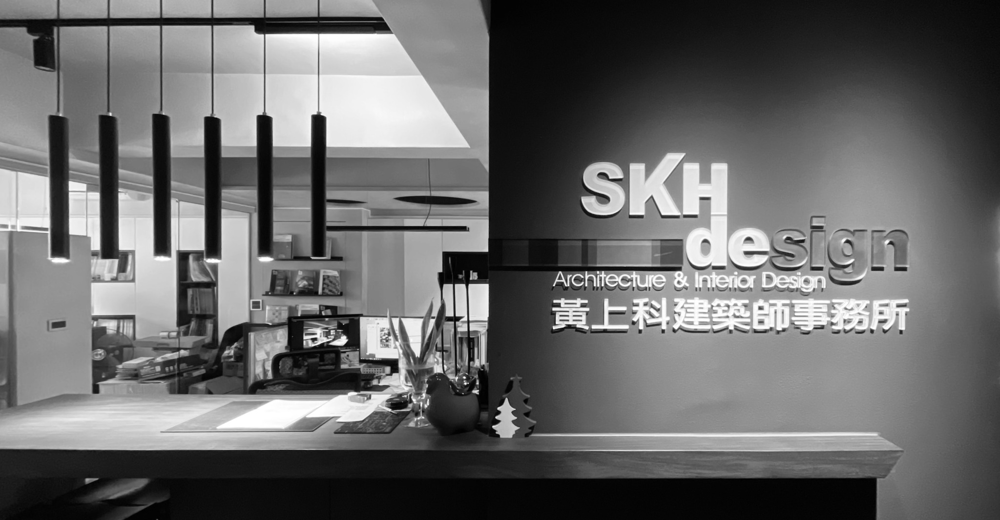

我們以創新設計理念結合在地人文與自然環境，打造兼具美學、功能與永續性的優質建築。無論是自用農村宅邸、度假別墅，或是投資型民宿開發，我們皆能為客戶量身打造完整解決方案。
從前期規劃、圖說繪製、法規申請，到工程監造與室內外整合施工，皆由資深建築師親自把關，確保品質與時程。
DESIGN PHILOSOPHY
我們秉持「以人為本、尊重自然」的設計哲學，致力為每位客戶創造夢想中的理想居所。選擇我們，即擁有一站式安心保障，讓您的建築夢想輕鬆實現。

ABOUT SKH DESIGN
以專業整合設計與施工，完成每一座理想建築。
本事務所為專業建築師團隊，專注於農舍與別墅的整體規劃與開發，提供從概念設計到竣工營運的一條龍專業服務。
我們以創新設計理念結合在地人文與自然環境，打造兼具美學、功能與永續性的優質建築。無論是自用農村宅邸、度假別墅，或是投資型民宿開發，我們皆能為客戶量身打造完整解決方案。
從前期規劃、圖說繪製、法規申請，到工程監造與室內外整合施工，皆由資深建築師親自把關，確保品質與時程。
DESIGN PHILOSOPHY
我們秉持「以人為本、尊重自然」的設計哲學，致力為每位客戶創造夢想中的理想居所。選擇我們，即擁有一站式安心保障，讓您的建築夢想輕鬆實現。